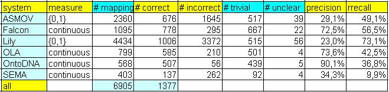
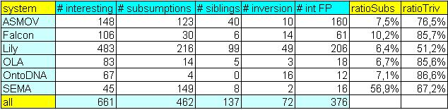

Evaluation of 'Conference track'
According to the nature of this track, we are mainly interested in some
"interesting" mappings ("nuggets"). Although traditional evaulation was not
our intention, we made some sort of evaluation as a side-effect of processing
results from our six participants.
All the statistics as well as precision and recall have been provisionally made by track organisers, who can
often be subjective; the focus of the track is on interesting individual
alignments and repeated patterns rather than on precision/recall figures.
So far, we have manually labelled 6898 mappings from participants. In order to make evaluation process more balanced, we transformed all results of
participants into 91 alignments, except results of the SEMA tool. They (SEMA team) delivered
13 alignments – they mapped all ontologies to the EKAW ontology. Additionally, we took mappings from participants with higher measure than 0,7.

The abovementioned table encompasses several numerical statistics related to the results of six participants, called according to
name of their systems (ASMOV, Falcon, Lily, OLA, OntoDNA and SEMA).
Finally, there is also number of all unique mappings in the last row of the table. In the following, columns are explained:
- measure shows whether mapping is strictly true/false or is scaled between 0 and 1,
- # mappings shows number of all mappings which have been included in "assessment,"
- # correct shows number of correct mappings, in other words, it is number of true positive mappings,
- # incorrect shows number of incorrect mappings, ie. false positive mappings,
- # trivial shows number of mappings where both elements have the same name and they were equal.
- # unclear shows number of unclear mappings where evaluator has not been able to decide whether mapping is correct or not.
The following columns are dealing with measure of precision and recall:
- precision (P) is computed as ratio of the number of all correct mappings to the number of incorrect plus correct mappings,
- rrecall (rR) is computed as ratio of the number of all correct mappings (sum of all correct mappings per one system) to the number of all correct mappings found by any of systems (per all systems).
This is our "relative" recall.
During manual evaluation we used the following 'categories', that you can see in
the table below. These 'categories' are mainly needed for choosing candidates for 'Consensus building workshop':
- # interesting shows number of "interesting" correct mappings, these mappings are correspondences which is not so easy to find at first sight (due to eg. string-based approach is not enough),
- # subsumptions shows number of mappings which have been wrong classified as equivalence, but it should be in
correspondence with relation of subsumption, in arbitrary direction,
- # siblings shows number of mappings which have been wrong classified as equivalence, but mapped elements are rather siblings,
- # inversion shows number of mappings which have been wrong classified as equivalence, but mapped relations are rather inverse than equivalent,
- # int FP shows number of "interesting" incorrect mappings, ie. "interesting" false positive mappings.
These mappings are incorrect correspondences which do not belong to any abovementioned groups (eg. subsumptions, siblings, etc.),
- ratioSubs shows ratio of the number of subsumption errors and the number of incorrect mappings,
- ratioTriv shows ratio of the number of so-called trivial mappings and the number of correct mappings.

Results of all participants
There were six participants in 'conference track' within OAEI-2007. You can download result of each participant (ie. alignments that participant submitted to 'conference track').